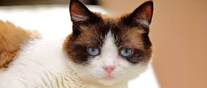
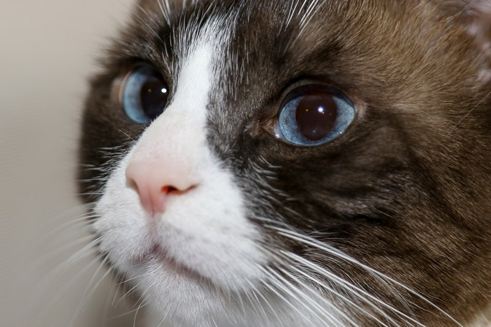

RARE
Snowshoe cats are known to get along well with children and other pets. The breed is usually mellow and sweet natured with a sociable personality. These cats thrive under the care of their owners, so they don't fare well if left alone for long durations.
Originally called “Silver Laces,” the snowshoe cat breed originated in Philadelphia, Penn., 45 years ago but to this day remains one of the rarest breeds in the United States.
Evidently they are—as long as you don't mind a very vocal cat as opposed to a quiet one. Information I've seen indicates they are good family cats, and they're one of the few breeds that has a fondness for water, so it shouldn't be a problem when bath-time comes around.
